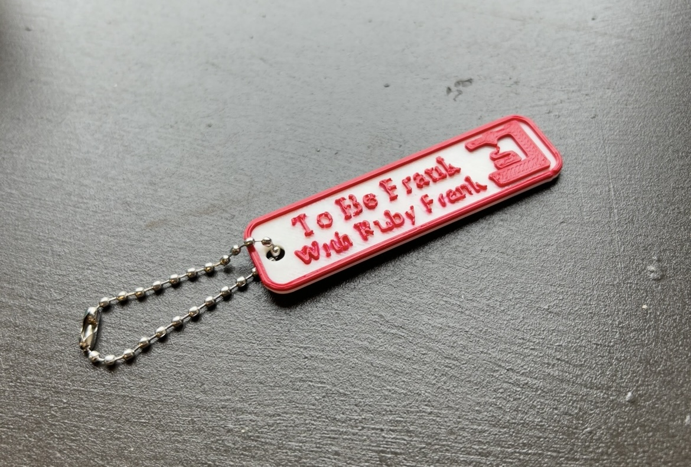
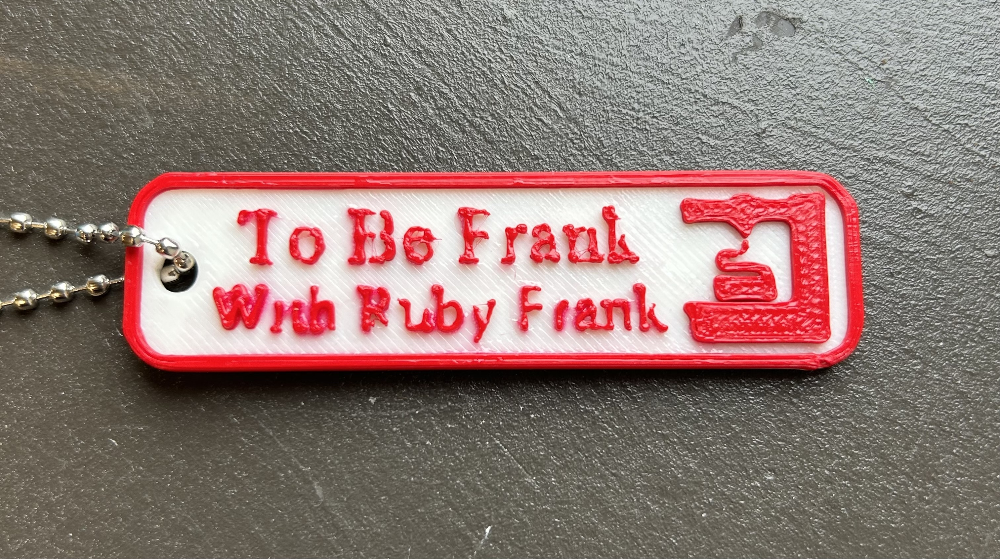
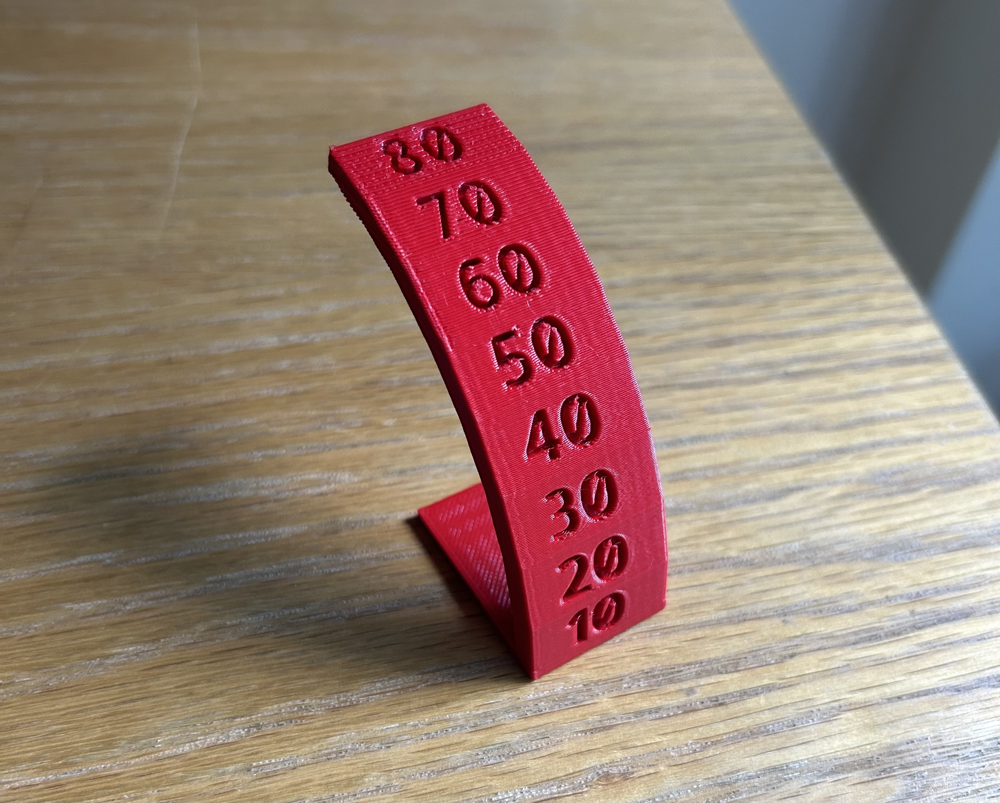
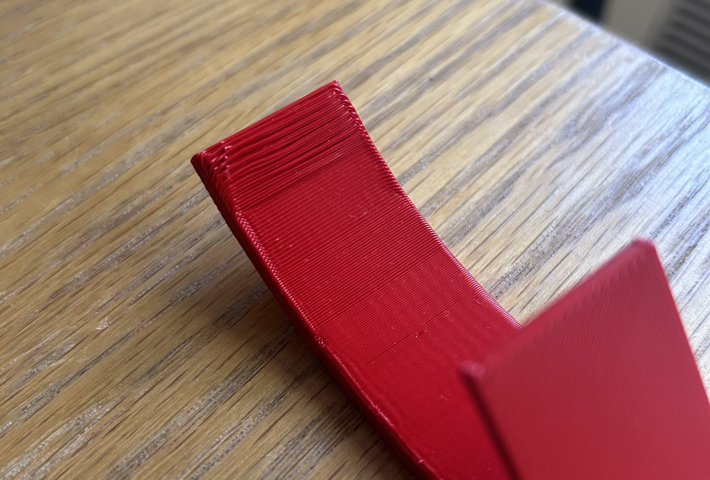

Part 1: Nametag 
To Be Frank With Ruby Frank, my fictitious podcast
Detail issues
We began by setting up the PrusaSlicer with the corresponding PrusaMini machines and PLA filament. I edited the name to read “To Be Frank With Ruby Frank” with a line break in between. I shifted the text, making sure it stayed within the tag itself. Finally, I changed the font to Times New Roman. This font, I would come to find out, proved difficult for the scale of the nametag, with the serif feet straining the PrusaMini’s ability to print in detail. After slicing, logging and transferring it through USB, my first attempt failed. There was an issue with the filament when printing the text color, it did not complete at all as it never fully grasped nor loaded the filament. After adjusting the filament, my second attempt worked well, seldom the small details on the text itself. Finally, I coated my nametag in clear nail polish to best preserve the detailed text.
Part 2: Second Print 
Overhang test
Issue began ~60
The PrusaMini was able to print the overhang challenge up until the 60 mark, when on the underside it becomes noticeable that the rows of filament had a difficult time sticking to each other. There were no supports printed and the direction of the print (horizontal with the numbers) made it so it was printing on top of air, not cooling in time to create a seamless structural underside. It is most visible at the 80 mark, where the extrusions are clearly separated and visible. Overall, the print is mostly complete, but if I wanted to further test the printer, I could stretch the model in PrusaSlicer to make the overhang more extreme. If the print went vertically with the numbers instead, it likely would have had time to cool because those rows would have been shorter and more closely aligned. This tells me that the 3D printer needs to print overhang in smaller increments in order to give it structural integrity. When designing 3D models, overhang and overall printing practicality must be taken into consideration. The orientation may sometimes helps create a structurally sound print as well. The 3MF file is a more efficient version of the STL file, including all the printing instructions necessary but in a simpler format.